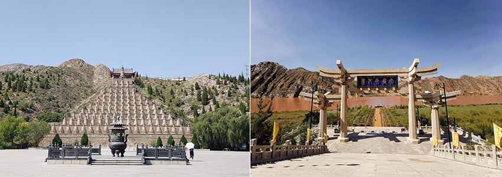
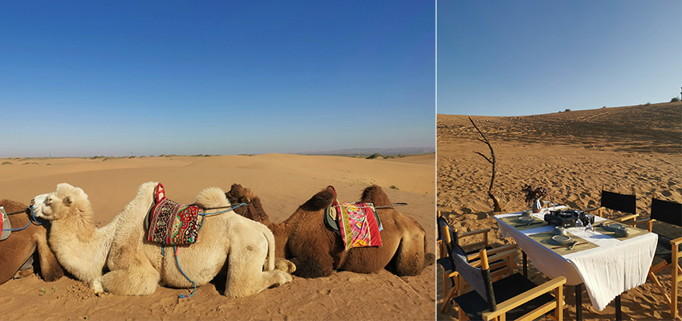
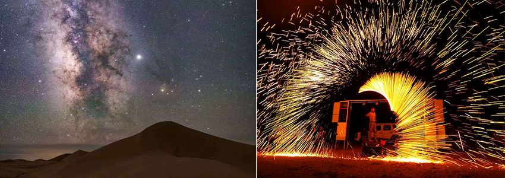
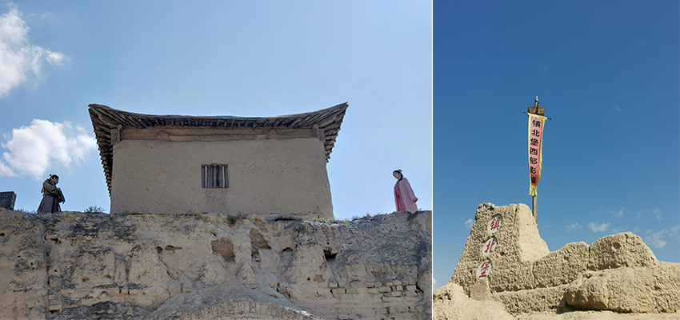

寧夏回族自治區，位於中國西部的黃河上游地區，西北部接內蒙古自治區，南部與甘肅省相連，這裡擁有大漠、高山、綠洲、落日的大自然風光，第一次看見這樣的景觀，都會忍不住由衷地讚嘆這獨具魅力的山河壯美奇景，這個地方孕育了許多古老的黃河文明、雄渾的大漠風光、神秘的西夏文化、濃郁的回鄉風情以及美麗的塞上江南，共同構成了絢爛多彩的神奇寧夏。
悠久的歷史和厚重的文化積澱在這塊大地上，我們像是穿越到了不同的時空，一覽遠在三萬年前的舊石器時代，探索人類在這裡生活過的痕跡。在銀川寧夏旅遊的五天當中，看見了奔騰而下一瀉千里的黃河橫穿而過，體驗了考古學家保存文化遺址的工作，行走在璀璨星空下的靜穆沙漠裡。非常推薦喜歡古文化、戈壁沙洲的朋友，有機會一定要來寧夏感受大河江山、大漠風光的黃金寶地。
黃河上的傳說 – 大禹治水
傳說黃河氾濫，水患讓百姓們苦不勘言，大禹來到寧夏的青銅峽治水，以神斧劈開石壁，疏通河道，平息了洪水災禍，當時的大禹怕耽誤治水，三過家門而不入，是什麼樣偉大的獻身精神可以做到這種地步? 我們在黃河大峽谷觀賞大禹治水的故事，黃河的河水，就如同他的名字般混水如黃，河內帶有大量的泥沙，顏色真的很像奶茶。這裡還有沉睡千年的西夏108塔，民間傳說，是佛教把人生的煩惱歸類為108種，善男信女只要戴串珠108顆，念佛誦經108次，敲鐘108響，就可以消除煩惱並且帶來吉祥和好運，許多來到這裡觀光的旅客，都會用另外一種方式，「數塔」來試著消除人生的煩惱。
|  |
浩瀚無邊的騰格里大沙漠 - 中衛沙波頭景區
「大漠孤烟直，長河落日圓。」一語詮釋了寧夏所帶給我的感受，選擇在這遼闊的沙漠中留宿一宿，好好感受大自然的鬼斧神工，細細品味那漫長的日落，觀賞那漫天的星河。除此之外，這裡還有驚險又刺激的衝沙活動，乘坐著越野車穿梭在一個又一個的高聳沙丘，塵土飛揚瀰漫在廣闊的沙漠中，另外也有滑沙體驗，屁股直接坐在滑沙板，腰桿一挺、雙腳一蹬，讓身體自然地向前傾倒，順著沙丘滑下來，沙粒紛飛後，享受兩耳生風、飆沙的快感，最吸引人的是在沃野千里的茫茫大漠，騎乘在高大的駱駝上，漫步在這黃土流動的沙漠中，很是愜意。
|  |
搖晃手中的紅酒杯，在落日餘暉的夕陽裡，和好友們大快朵頤浪漫的燭光晚餐。這片一望無際與世隔絕的沙漠中，沒了訊號的手機，彷彿身在遠離塵囂的世外桃源，拋開人世間的紛紛擾擾，瞬間找到了內心的寧靜，此刻這世界只留下我們的歡笑。隨著夜晚降臨，氣溫也開始急驟下降，營火晚會的音樂在耳邊響起，煙火劃破天際，在這寧靜的黑夜裡絢麗綻放，冷颼颼的寒風中，篝火暖暖的圍繞著大家，抬頭就是星光燦爛的銀河，踩著腳下細軟的沙粒，緩緩徒步走到屬於我們的白色帳篷，這裡沒有像網美般的夢幻浴室或是波西米亞風的豪華臥房。如果想上廁所，可能需要艱難地奔跑到對面的山頭，那是全沙漠唯一四面鐵皮圍起來的小型便所，中間有一個很深的黑洞，是大家解放的地方，沒有水源可以洗手跟沖水，顧名思義那裡的景象，可說是味覺跟視覺的兩大衝擊，非常好玩的原始體驗。
|  |
穿越時空 - 水洞溝遺址
水洞溝遺址是中國最早發現舊石器時代文化的地方，多年以來發掘遠古人類所使用的歷史文物就達上萬件。這裡有保存完好的明代長城，還有著很適合玩躲貓貓的藏兵洞，裡面有四通八達的低矮古地道以及地質獨特的大峽谷、及北疆天歌的表演等，其中特別的還可以體驗考古學家是怎麼發掘遺址，從「鑽探」、「測量」、「發掘」、「紀錄」、「採集」與「出土」都有很深的學問，店家讓我們扮演小小考古學家，體驗所有的步驟，在地上使用工具緩慢的挖了很久，最後找到一塊色澤純正的石頭，當做是這趟考古之旅的紀念品，只可惜時間不允許讓我參與屬於這裡的所有。
東方好萊塢 - 鎮北堡西部影城
有著兩座古代城堡的遺址，作者張賢亮利用一些方式，很好地保存了古堡的荒涼感、黃土味，並打造了中國電影電視的外景拍攝基地，成為中國5A級的旅遊景區，此處曾拍攝有《大話西遊》、《錦衣衛》、《牧馬人》等經典影片，走進影城的一系列真實場景，我就開始沉浸在懷舊劇情的無限回憶中……。
還記得大話西遊裡面的至尊寶在高台上對著紫霞說的那句經典台詞：「曾經有一份真誠的愛情放在我面前，我沒有珍惜，等我失去的時候才後悔莫及，人世間最痛苦的事莫過于此。你的劍在我的咽喉上割下去吧！不用再猶豫了！如果上天能夠給我一個再來一次的機會，我會對那個女孩子說三個字“我愛你”，如果非要在這份愛上加上一個期限，我希望是——一萬年！」，感概人生很多時候事與願違，現實裡的我們沒有月光寶盒，也沒有辦法穿越時空改變過去，所能做到最好的，就是好好珍惜當下，不讓自己後悔每一個決定。
在這個世界上，
沒有絕對正確的選擇，
我們都在努力，
使當時的選擇變得正確，
既然已經決定，
那就奮不顧身的實現它。
|  |